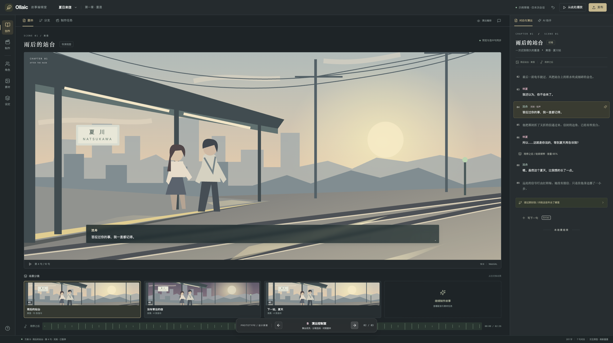
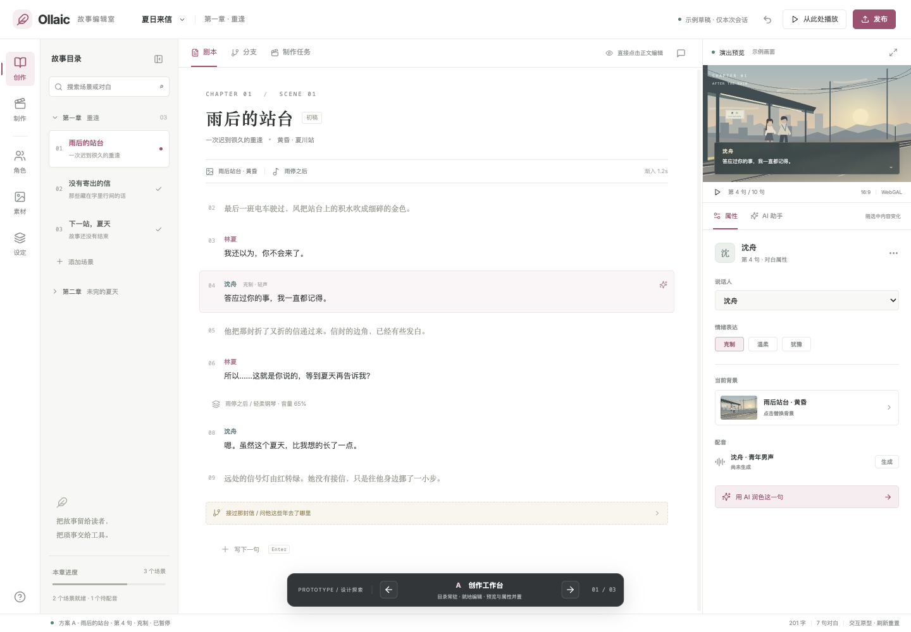
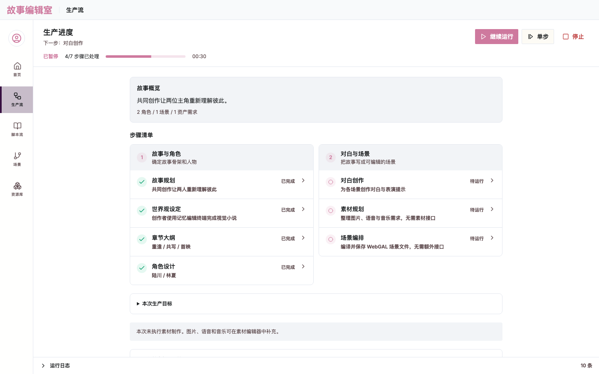
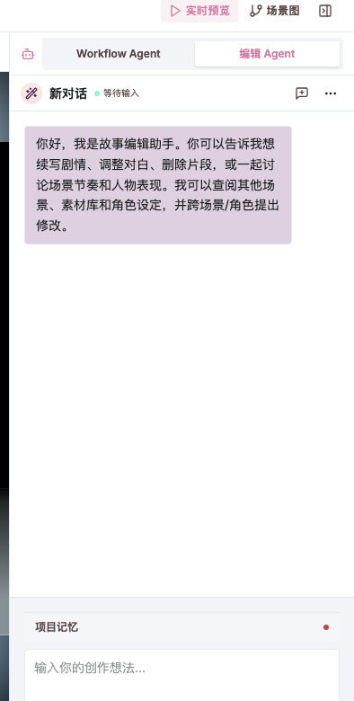
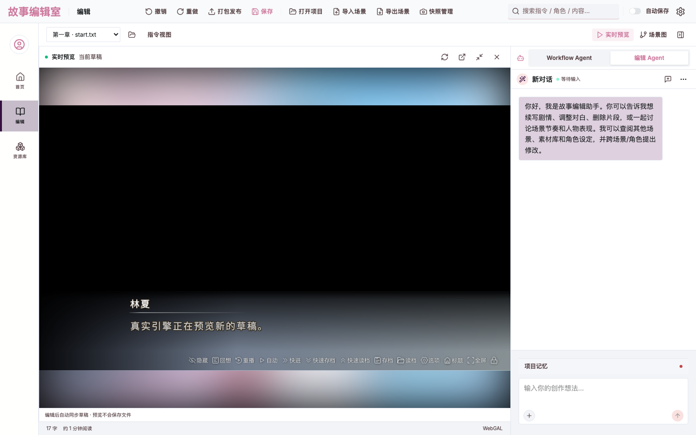

面向 WebGAL 的桌面可视小说编辑器
画面为开发期界面原型
非 v0.2.0 实机
开发期界面原型 · 非 v0.2.0 实机

故事，
有结构。
用节点组织叙事。
把不同走向，编排成可追踪的分支。
起点一段对白
继续对话↗
切换场景↗
后续场景
叙事结构示意，非软件操作界面
让场景
进入叙事。
角色、背景、对白。
在场景里组织它们，
在预览里查看演出。

从构想到草稿，
分步推进。


让 Agent 参与制作，结合项目记忆推进流程。
检查草稿，再继续编辑。
边编辑，边预览。
查看当前草稿的演出效果，再回到编辑中调整。
预览
导出，
成为可运行的项目。
继续使用 WebGAL 运行作品。
Ollaic 是编辑器，WebGAL 是运行引擎。
WebGAL可运行项目
开始
制作。
放开给大家玩的
早期桌面编辑器。
仓库包含 Android 与 iOS 客户端；
本页不提供移动端正式发布包或应用商店入口。